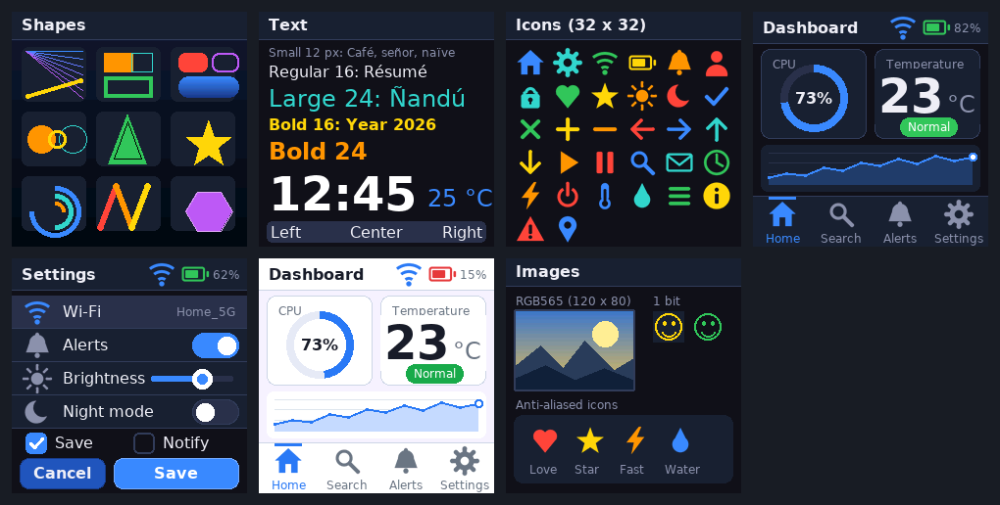
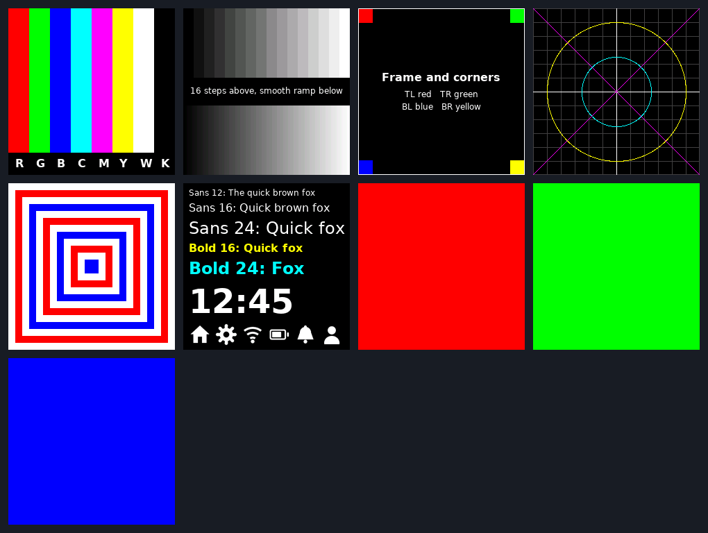

A portable C graphics library for ST7789 displays on STM32
Shapes, anti-aliased text, icons, images and widgets for 240 x 240 RGB565 panels. It talks to the hardware through two functions, uses integer arithmetic only, and every drawing path is tested on a PC.
- C99
- MIT license
- FMC, SPI or 8-bit
- No float, no malloc
- Single-header option


Why this library
Driving a parallel ST7789 from an STM32 is easy to start and hard to make fast. Sending the address window for every pixel costs 12 bus writes per pixel, so a full screen takes 691,200 writes. This library sets the window once and streams the pixels, which brings a full-screen fill down to 57,611 writes.
Fast by construction
Every primitive paints runs of pixels with one window and one burst, and clips to the screen first. Nothing draws pixel by pixel.
Two-function port
Implement gfx_port_cmd() and gfx_port_data() for FMC, SPI or an 8-bit bus. The rest of the library never touches a register.
Host-testable
A model of the controller runs on your PC. Tests compare every page of the demo to golden pixel hashes before anything reaches the board.
Anti-aliased text
Six proportional fonts derived from DejaVu Sans, 4 bits per pixel, with UTF-8 input for Latin-1 characters.
Ready-made widgets
Panel, button, switch, slider, ring gauge, chart, list, tab bar and status bar, with a dark and a light theme.
Small footprint
Integer maths only. About 141 KB of font data, which the linker drops for fonts you do not use. No dynamic memory.
How it draws
A rectangle is clipped, the controller window is set once with CASET, RASET and RAMWR, and then every pixel is sent as a single data word. The controller advances through the window by itself.


make bench. A single pixel costs the same either way; everything larger is about 8 to 12 times cheaper.Quick start
Add include/ and src/ to your project, or drop in the single header. Then provide the two port functions and draw.
#include "gfx_core.h"
#include "gfx_text.h"
#include "gfx_fonts.h"
/* The only link to the hardware. FMC 16-bit, A0 selects command or data. */
#define LCD_REG (*(volatile uint16_t *)0x60000000u)
#define LCD_RAM (*(volatile uint16_t *)0x60000002u)
void gfx_port_cmd(uint8_t c) { LCD_REG = c; }
void gfx_port_data(uint16_t d) { LCD_RAM = d; }
void draw(void)
{
gfx_fill_screen(GFX_HEX(0x10131A));
gfx_text(10, 10, "Hello, ST7789", &gfx_font_sans_bold_24,
GFX_WHITE, GFX_HEX(0x10131A));
}The full walkthrough, including STM32CubeIDE setup and the SPI and 8-bit ports, is in Getting started. The single-header form is described in the API reference.
Demo and self-test pages
The library ships seven demo pages and nine bring-up patterns. The same pages are rendered on the PC model, hashed, and compared with a golden file in CI.


Is it the right fit
- Good fit: a 240 x 240 ST7789 panel on an STM32 with FMC (or any MCU that can write a command byte and a data word), a UI of panels, text and gauges, and a wish to test drawing code on a PC.
- Not a fit: screen rotation, scrolling, hardware read-back and DMA streaming are not provided. See the known limits.
Credits
The library started as practice 7 of the microprocessor-systems course (PSyD) at the Complutense University of Madrid (UCM), written for the STM32F723E-DISCO board, and was reworked into this standalone project. The fonts are derived from DejaVu Sans; see the third-party notices.